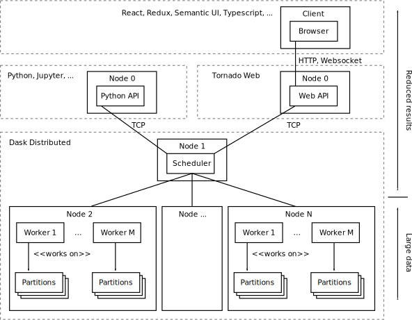

Architecture¶
For the beginning, LiberTEM will focus on pixelated STEM data processing, both interactive and offline. As concrete supported operations, we will start with everything that can be expressed as the application of one or more masks and summation, i.e. virtual detector, center of mass etc. These operations are embarrasingly parallel and can be scaled to a distributed system very well.
For our task, data locality is one of the most important factors for achieving good performance and scalabilty. With a traditional distributed storage solution (like lustre or NFS), the network will quickly become the bottleneck.
LiberTEM is distributing the data to the local storage of each compute node. One possible implementation is using the Hadoop filesytem (HDFS), although we are working on a transparent caching layer as an alternative. The general idea is to split the dataset into (usually disjoint) partitions, which are assigned to worker nodes.
The execution is structured into Tasks and Jobs. A Job represents the computation on a whole dataset, and is divided into Tasks for each partition. The scheduler executes Tasks on the available worker nodes. For fast execution on each node, the Task reads the data in small Tiles (~1MB).
For distributing the workload, we are using dask.distributed. The Future API allows us to control our computation in a flexible way, with little overhead. With dask Futures, we can assure that computation on a partition of the dataset is scheduled on the node(s) that hold the partition on their local storage.
For ingesting data into the cluster, a caching layer (WIP) transparently reads a dataset from a primary source (via a shared network file system, HTTP, …) and stores it on fast local storage in a format that is best suited for efficient processing. The cached data can also be pre-processed, for example for offset correction or applying a gain map.
An important part of the architecture is the API server. Through the API server, the client gets access to the resources of the cluster, by running jobs. It uses a protocol based on HTTP and/or websockets. Processing is initiated by HTTP calls, and results are streamed back to the browser via web sockets.
The API server keeps some state in memory, like information about the currently opened datasets. Traditionally this would be done with an external in-memory database, but for ease of deployment, we decided to integrate this into the API server.
Processing is done in an asynchronous fashion; if you start a job the request immediately returns, but you get notifications about status changes, or you can explicitly query the API server about a specific job.
As UI, we are developing a web-based interface. This allows LiberTEM to work in cloud environment as well as locally on a single node. We can benefit from existing FOSS frameworks and infrastructure for communication, authentication etc. of the web.
LiberTEM is also suited for running on your laptop or workstation. In this case, all parts can run on a single node. We can also skip the caching step, if the data is already available locally.
When taking care to avoid needless copying and buffering, we can achieve native throughput on each node. With NVMe SSDs, this means we can process multiple gigabytes per second per node.
Mathematical expression for applying masks¶
The most basic operation with pixelated STEM data is multiplying each frame element-wise with a mask of the same size and summing up the result for each frame. This way one can implement virtual detectors, center of mass and darkfield imaging, to name a few examples.
Since each frame is processed individually and there’s a 1:1 match between mask element and detector pixel, the processing can be simplified by flattening the 4D dataset to a 2D matrix, i.e. a list of vectors where each vector is one flattened detector frame. Correspondingly, each mask is flattened to a 1D vector as well. The result of element-wise multiplication and summation is a 1D vector for each mask, where each entry corresponds to the result of one frame. To display the result, the data can be re-shaped to the scan dimension again.
With those extra dimensions flattened, let c be the number of pixels per frame,
n the number of frames and m the number of masks. Let (A) be
a n x c matrix with the scanned data, and B a c x m matrix with the masks.
Applying the masks in B to the detector data in A can be expressed as a
rectangular matrix product
of A and B.
That means we can use the BLAS function GEMM. to process the flattened data and we can choose from wide array of highly optimized implementations of this operation.